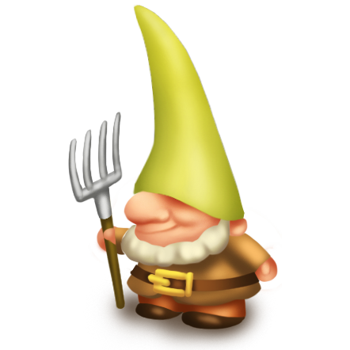
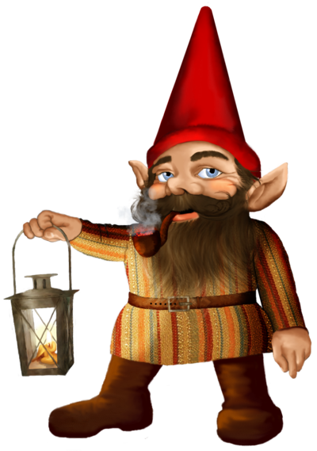
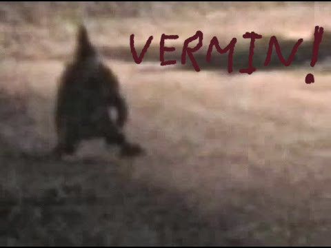

 
Go home GNOME!
Report a gnome sighting today!!!
Go back

GNOMES
ARE NOT
REAL!
If you have have whitnessed a gnome sighting in your area, then it is your civil duty to report it
imediately!!!
.
If you wish to make a statement, click the "proceed" button below, and you will be redirected to the whitness report page.
Proceed